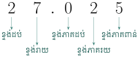

- ប្ដូរប្រភាគទៅជាចំនួនទសភាគនិងច្រាសមកវិញ
- ប្រៀបធៀបនិងរៀបលំដាប់នៃចំនួនទសភាគ
- បង្គត់ចំនួនទសភាគមកត្រឹមដែលចង់បាន
- ធ្វើប្រមាណវិធីលើចំនួនទសភាគ
- ដោះស្រាយចំណោទដែលទាក់ទងនឹងចំនួនទសភាគ ។
១. សញ្ញាណចំនួនទសភាគ

គេចែកបន្ទះមួយជា 10 ផ្នែកស្មើៗគ្នា ។ \(\displaystyle \frac{1}{10}\) ផ្នែកនីមួយៗស្មើនឹង \(\displaystyle \frac{1}{10}\) ។
\(\displaystyle \frac{1}{10}\) អាចសរសេរជា \(\displaystyle 0.1\) (អានថា សូន្យចុចមួយ) មានន័យថា \(\displaystyle \frac{1}{10} = 0.1\) និងច្រាសមកវិញ ។
គេចែកការេមួយជា 100 ផ្នែកស្មើៗគ្នា ។ ផ្នែកនីមួយៗស្មើនឹង \(\displaystyle \frac{1}{100}\) ។
ដូចនេះ \(\displaystyle \frac{1}{100} = 0.01\) (អានថាសូន្យចុចសូន្យមួយ) និងច្រាសមកវិញ ។
ចំនួនដូចជា \(\displaystyle 0.1\) និង \(\displaystyle 0.01\) ហៅថាចំនួនទសភាគ ។ សញ្ញាចុចហៅថាចំណុចទសភាគ ។
ចំនួនទសភាគជាចំនួនភាគមានភាគបែងស្មើ \(\displaystyle 10 \, , \, 100 \, , \, 1000 \, , \dots\) ។
\(\displaystyle 3.71 \quad , \quad 0.50 \quad , \quad 0.034 \quad , \quad -1.25 \quad , \quad -10.016 \quad , \quad 246.31 \quad , \dots\) ។
១.១ តម្លៃលេខតាមខ្ទង់ក្នុងចំនួនទសភាគ
ដូចចំនួនគត់ដែលលេខនីមួយៗនៅក្នុងចំនួនទសភាគមានតម្លៃជាក់លាក់មួយទៅតាមខ្ទង់របស់វា : ខ្ទង់រយ ខ្ទង់ដប់ ខ្ទង់ភាគដប់ ខ្ទង់ភាគរយ ខ្ទង់ភាគពាន់ \(\displaystyle \dots\) ។
\(\displaystyle 27.025\)

១.២ ការប្រៀបធៀបចំនួនទសភាគ
ប្រៀបធៀបចំនួន \(\displaystyle 2.367\) និង \(\displaystyle 2.371\) , ដូចប្រៀបធៀប \(\displaystyle 3.135\) និង \(\displaystyle 3.162\) ។

ដូចនេះ \(\displaystyle 2.367 < 2.371\) ។ ដូចនេះ \(\displaystyle 3.135 < 3.162\) ។
គេក៏អាចប្រើបន្ទាត់ចំនួនដើម្បីប្រៀបធៀបចំនួនទសភាគដែរ ។
១.៣ ការរៀបលំដាប់ចំនួនទសភាគ
រៀប \(\displaystyle 3.09 \quad , \quad 3.04\) និង \(\displaystyle 3.07\) តាមលំដាប់កើន ។
គេចែកចន្លោះពីចំនួនលេខ \(\displaystyle 3.0\) និង \(\displaystyle 3.1\) ជា 10 ផ្នែកស្មើៗគ្នា ។ ផ្នែកនីមួយៗស្មើនឹង \(\displaystyle 0.01\) ។

ដូចនេះ ចំនួនទសភាគដែលបានរៀបតាមលំដាប់កើនគឺ \(\displaystyle 3.04 \quad , \quad 3.07 \quad , \quad 3.09\) ។
ស៊ីណានមានម៉ាស \(\displaystyle 45.73kg\) សំអានម៉ាស \(\displaystyle 36.76kg\) និងនារីមានម៉ាស \(\displaystyle 45.70kg\) ។ តើអ្នកណាមានម៉ាសធំជាងគេបំផុត ? អ្នកណាមានម៉ាសតូចជាងគេ ?
គេបាន \(\displaystyle 45.73 > 45.70 > 36.76\) ។ ដូចនេះស៊ីណានមានម៉ាសធំជាងគេបំផុតហើយ សំអានម៉ាសតូចជាងគេ ។
សរសេរតម្លៃលេខតាមខ្ទង់នៃចំនួនទសភាគនីមួយៗខាងក្រោម :
ក. \(\displaystyle 0.785\) ខ. \(\displaystyle 16.301\) គ. \(\displaystyle 2.0397\) ។
ចូររៀបចំនួន \(\displaystyle -6.245 \quad , \quad -5.867 \quad , \quad -0.045 \quad , \quad -3.243 \quad , \quad -0.127\) តាមលំដាប់កើននៃទំហំ ។
២. ការប្ដូរប្រភាគទៅជាចំនួនទសភាគ
ប្ដូរសរសេរប្រភាគខាងក្រោមជាចំនួនទសភាគ ។
ក. \(\displaystyle \frac{9}{10} = 0.9\) ខ. \(\displaystyle \frac{27}{100} = 0.27\) គ. \(\displaystyle \frac{-5}{100} = -0.05\) ឃ. \(\displaystyle \frac{-329}{100} = -3.29\) ។
នៅពេលគេយក 2 ចែកនឹង 3 គេបាន \(\displaystyle \frac{2}{3} = 0.6666\dots\) ។ បើគេនៅបន្តវិធីចែកគេនៅតែបានលេខ 6 ជានិច្ច ។
\(\displaystyle 0.6666\dots = 0.\bar{6}\) ហៅថាចំនួនទសភាគខួបដែលមាន 6 ជាខួប ។
ប្ដូរសរសេរប្រភាគខាងក្រោមជាចំនួនទសភាគ ។
៣. ការប្ដូរចំនួនទសភាគទៅជាប្រភាគ
សរសេរចំនួនទសភាគនីមួយៗខាងក្រោមជាប្រភាគ ឬចំនួនចម្រុះក្នុងទម្រង់ដែលមិនអាចសម្រួលបាន :
ក. \(\displaystyle 0.28 = \frac{28}{100} = \frac{7}{25}\)
ខ. \(\displaystyle 0.\bar{2}\) តាង \(\displaystyle N = 0.\bar{2}\dots\) ឬ \(\displaystyle 0.222\dots\) នោះ \(\displaystyle 10N = 2.222\dots\)
ដោយដក \(\displaystyle N = 0.222\) ពី \(\displaystyle 10N\) \(\displaystyle 10N = 2.222\dots\)
ដើម្បីបំបាត់ផ្នែកប្រភាគដែល \(\displaystyle 0.222\dots\) នោះគេបាន
\(\displaystyle 10N - N = (2.222\dots) - (0.222\dots)\)
\(\displaystyle 9N = 2\) នាំឱ្យ \(\displaystyle N = \frac{2}{9}\) ដូចនេះ \(\displaystyle 0.\bar{2} = \frac{2}{9}\) ។
សរសេរចំនួនទសភាគខួបនីមួយៗដោយប្រើសញ្ញាបាននៅលើខួប
ក. \(\displaystyle 0.363636\dots\) ខ. \(\displaystyle 10.0456456\dots\) គ. \(\displaystyle -7.074747\dots\) ។
ក. \(\displaystyle 0.363636\dots = 0.\overline{36}\) ខ. \(\displaystyle 10.0456456\dots = 10.0\overline{456}\) គ. \(\displaystyle -7.074747\dots = -7.0\overline{74}\) ។
សរសេរចំនួនទសភាគខាងក្រោមជាប្រភាគ :
ក. \(\displaystyle 0.065\) ខ. \(\displaystyle -1.\bar{7}\) ។
ក. \(\displaystyle 0.065 = \frac{65}{1000} = \frac{13}{200}\)
ខ. តាង \(\displaystyle N = -1.\bar{7}\) នោះ \(\displaystyle 10N = -17.\bar{7}\)
\(\displaystyle -(N = -1.\bar{7})\)
\(\displaystyle 9N = -16\) នោះ \(\displaystyle N = -\frac{16}{9} = -1\frac{7}{9}\) ។ ដូចនេះ \(\displaystyle -1.\bar{7} = -1\frac{7}{9}\) ។
សរសេរប្រភាគនីមួយៗខាងក្រោមជាចំនួនទសភាគ
ក. \(\displaystyle \frac{3}{10}\) ខ. \(\displaystyle -\frac{13}{100}\) គ. \(\displaystyle \frac{407}{1000}\) ឃ. \(\displaystyle -\frac{13786}{1000}\) ។
ប្ដូរសរសេរចំនួនទសភាគខួបនីមួយៗជាប្រភាគ ។
ក. \(\displaystyle 0.\overline{54}\) ខ. \(\displaystyle -4.\overline{01}\) គ. \(\displaystyle 0.\overline{345}\) ។
៤. វិធីបូកនិងវិធីដកនៃចំនួនទសភាគ
៤.១ វិធីបូកចំនួនទសភាគ
គណនា \(\displaystyle 13.3cm + 5.2cm\)

គណនា ក. \(\displaystyle 3.49 + 18.753\) ខ. \(\displaystyle 101.51 + 13.31\) ។
៤.២ វិធីដកចំនួនទសភាគ
គណនា \(\displaystyle 14.3cm - 8.2cm\)

គណនា ក. \(\displaystyle -2.34 + (-16.5) + 3.56\) ខ. \(\displaystyle -8.245 - (-5.113) - (-0.456)\) ។
ក. \(\displaystyle -2.34 + (-16.5) + 3.56 = -2.34 - 16.5 + 3.56 = -15.28\)
ខ. \(\displaystyle -8.245 + 5.113 + 0.456 = -2.676\) ។
គណនា \(\displaystyle 4.235 + (-6.563) - (-10.999)\) ។
៥. វិធីគុណនិងវិធីចែកនៃចំនួនទសភាគ
៥.១ វិធីគុណចំនួនទសភាគ
គណនាផលគុណនីមួយៗខាងក្រោម :
ក. \(\displaystyle 2.56 \times 8\)
ដូចនេះ \(\displaystyle 2.56 \times 8 = 20.48\) ។
ខ. \(\displaystyle -1.482 \times 2.9\)
ដូចនេះ \(\displaystyle -1.482 \times 2.9 = -4.2978\) ។
គណនាផលគុណនីមួយៗខាងក្រោម :
ក. \(\displaystyle 0.387 \times 10 = 3.87\) ខ. \(\displaystyle 0.387 \times 100 = 38.7\)
គ. \(\displaystyle 0.387 \times 1000 = 387\) ឃ. \(\displaystyle -2.754 \times 10000 = -27540\) ។
ដើម្បីគុណមួយចំនួនទសភាគនិង \(\displaystyle 10 \, , \, 100 \, , \, 1000 \dots\) គេត្រូវរំកិលចំណុចទសភាគ \(\displaystyle 1 \, , \, 2 \, , \, 3 \, \dots\) ខ្ទង់ទៅខាងស្តាំ ។
៥.២ ការចែកចំនួនទសភាគនិងចំនួនគត់
ឪពុកមានផ្លែឪឡឹកដុំទម្ងន់ \(\displaystyle 0.4kg\) ឱ្យកូនពីរនាក់ ។ កូនម្នាក់ៗទទួលបាន \(\displaystyle 0.2kg\) ។ អ្នកទាំងពីរបានពុះឪឡឹកស្មើៗគ្នា :
គេបាន \(\displaystyle 0.4 \div 2\)
ដូចនេះ \(\displaystyle 0.4 \div 2 = 0.2kg\) ។
គណនាផលចែកក្នុងករណីនីមួយៗខាងក្រោម :
ក. \(\displaystyle 47.3 \div 10 = 4.73\) ខ. \(\displaystyle 47.3 \div 100 = 0.473\) គ. \(\displaystyle 47.3 \div 1000 = 0.0473\) ។
ដើម្បីចែកចំនួនទសភាគនិង \(\displaystyle 10 \, , \, 100 \, , \, 1000 \dots\) គេរំកិលចំណុចទសភាគ \(\displaystyle 1 \, , \, 2 \, , \, 3 \, \dots\) ខ្ទង់ទៅខាងឆ្វេង ។
៥.៣ ការចែកចំនួនទសភាគនិងចំនួនទសភាគ
គណនាផលចែកនីមួយៗខាងក្រោម :
ក. \(\displaystyle 1.272 \div 0.03 = \frac{1.272}{0.03} = \frac{1.272 \times 100}{0.03 \times 100} = \frac{127.2}{3} = 42.4\)
ខ. \(\displaystyle \frac{-0.0084}{-1.2} \div (-0.028) = -\left(\frac{0.0084}{1.2} \div 0.028\right) = -(0.007 \div 0.028) = -(7 \div 28) = -0.25\) ។
- ដើម្បីចែកចំនួនទសភាគមួយនិងចំនួនទសភាគមួយទៀត គេធ្វើតំណាងចែកនិងតួចែកឱ្យទៅជាចំនួនគត់ ដោយគុណតំណាងចែកនិងតួចែកនិង \(\displaystyle 10 \, , \, 100 \, , \, 1000 \dots\)
- បន្ទាប់មកគេប្រើវិធីចែកនៃចំនួនគត់និងចំនួនគត់ ។
ក. \(\displaystyle 0.0796 \div 0.1 = 0.796\) ខ. \(\displaystyle 0.0796 \div 0.01 = 7.96\)
គ. \(\displaystyle -0.796 \div (-0.001) = 796\) ឃ. \(\displaystyle -13.652 \div 0.001 = -13652\) ។
ដើម្បីចែកចំនួនទសភាគមួយនឹង \(\displaystyle 0.1 \, , \, 0.01 \, , \, 0.001\) គេត្រូវរំកិលចំណុចទសភាគ \(\displaystyle 1 \, , \, 2 \, , \, 3 \, \dots\) ខ្ទង់ទៅខាងស្តាំ ។
៥.៤ ការចែកចំនួនទសភាគនឹងប្រភាគ
ចូរគណនា
ក. \(\displaystyle 1.42 \div \frac{5}{6} = 1.42 \times \frac{6}{5} = \frac{8.52}{5} = 1.704\)
ខ. \(\displaystyle 2.5 \div \left(-\frac{125}{3}\right) = 2.5 \times \left(-\frac{3}{125}\right) = -\frac{7.5}{125} = -0.06\) ។
ចូរគណនា ក. \(\displaystyle -0.16 \times (-0.1) \times 4.5\) ខ. \(\displaystyle -3.6 \div (-0.0006)\) ។
ក. \(\displaystyle -0.16 \times (-0.1) \times 4.5 = +(0.16 \times 0.1 \times 4.5) = 0.016 \times 4.5 = 0.072\)
ខ. \(\displaystyle -3.6 \div (-0.0006) = +\left(\frac{3.6}{0.0006}\right) = \frac{36000}{6} = 6000\) ។
សៀវភៅ 5 ក្បាលថ្លៃ 8050.175 ៛ ។ ណារីបានទិញសៀវភៅ 15 ក្បាល ហើយបានឱ្យប្រាក់ទៅគេចំនួន 30000 ៛ ។ តើគេត្រូវអាប់ប្រាក់ឱ្យគាត់វិញចំនួនប៉ុន្មានរៀល ?
៦. ការបង្គត់ចំនួនទសភាគ
ការបង្គត់ចំនួនទសភាគក៏ដូចគ្នានឹងការបង្គត់ចំនួនគត់ដែរ ។ គេត្រូវដឹងថា ពេលដែលចំនួនណា មួយនៅចន្លោះកណ្តាលរវាងចំនួនពីរទៀតត្រូវបង្គត់ឡើង ។
បង្គត់ចំនួន \(\displaystyle 2.85\) យកត្រឹមខ្ទង់ភាគដប់ ។
ពេលបង្គត់ត្រឹមខ្ទង់ភាគដប់ គេត្រូវមើលលេខក្រោយបន្ទាប់ខ្ទង់ភាគដប់ 1 ខ្ទង់ គឺលេខ 5 គេត្រូវបង្គត់ឡើង ។ ដូចនេះ \(\displaystyle 2.85 \approx 2.9\) ។

បង្គត់ចំនួន \(\displaystyle 0.2198\) យកត្រឹមខ្ទង់ភាគរយ ។
គេត្រូវមើលលេខ 9 ត្រូវបង្គត់ឡើងគឺ \(\displaystyle 0.22\) ។
បង្គត់ចំនួន \(\displaystyle 1.92049\) យកត្រឹមខ្ទង់ភាគពាន់
ចំនួន \(\displaystyle 1.920\underline{49}\) ត្រូវបង្គត់ចុះ ។ ដូចនេះ \(\displaystyle 1.92049 \approx 1.920\)
៧. ការប៉ាន់ស្មានចម្លើយប្រហែល
គេអាចធ្វើការបង្គត់ចំនួនត្រឹមខ្ទង់ភាគដប់ ខ្ទង់ភាគរយ ខ្ទង់ភាគពាន់ \(\displaystyle \dots\) ដើម្បីជួយក្នុងការ ប៉ាន់ស្មានចម្លើយប្រហែល ។
គណនា \(\displaystyle 29.8 + 39.9 - 20.4\)
គេបាន \(\displaystyle 29.8 \approx 30 \quad , \quad 39.9 \approx 40 \quad , \quad 20.4 \approx 20\)
ដូចនេះ \(\displaystyle 29.8 + 39.9 - 20.4 \approx 30 + 40 - 20 \approx 50\) ។
ចូរធ្វើការប៉ាន់ស្មានដើម្បីរកចម្លើយដែលត្រឹមត្រូវ ។
\(\displaystyle 12.9 + 12.89 + 13.21 + 13.4\) មានតម្លៃប្រហែលនឹង
ក. \(\displaystyle 40.86\) ខ. \(\displaystyle 52.37\) គ. \(\displaystyle 29.286\) ឃ. \(\displaystyle 28.431\) ។
គេបាន \(\displaystyle 12.9 + 12.89 + 13.21 + 13.4 \approx 4 \times 13 \approx 52\) ។
ដូចនេះ ចម្លើយដែលត្រឹមត្រូវគឺ ខ. \(\displaystyle 52.37 \approx 52\) ។
បង្គត់ចំនួនខាងក្រោមត្រឹមខ្ទង់ភាគពាន់
ក. \(\displaystyle 0.004681\) ខ. \(\displaystyle 0.000604\) គ. \(\displaystyle 5.9845\) ។
លំហាត់
សរសេរប្រភាគនីមួយៗខាងក្រោមជាចំនួនទសភាគ :
- ក. \(\displaystyle \frac{7}{10}\)
- ខ. \(\displaystyle \frac{13}{100}\)
- គ. \(\displaystyle \frac{59}{1000}\)
- ឃ. \(\displaystyle -\frac{2451}{10000}\)
- ង. \(\displaystyle -\frac{13}{52}\) ។
សរសេរចំនួនទសភាគនីមួយៗជាប្រភាគ ឬចំនួនចម្រុះជាទម្រង់ដែលបង្រួមបាន :
- ក. \(\displaystyle 0.8\)
- ខ. \(\displaystyle -0.065\)
- គ. \(\displaystyle 8.375\)
- ឃ. \(\displaystyle -0.286\)
- ង. \(\displaystyle 8.7\) ។
បង្គត់ចំនួនទសភាគនីមួយៗខាងក្រោម ទៅជាចំនួនដែលមាន :
- (i). ផ្នែកទសភាគត្រឹមខ្ទង់ភាគដប់
- (ii). ផ្នែកទសភាគត្រឹមខ្ទង់ភាគរយ
- (iii). ផ្នែកទសភាគត្រឹមខ្ទង់ភាគពាន់ ។
- ក. \(\displaystyle -0.2508\)
- ខ. \(\displaystyle 6.8329\)
- គ. \(\displaystyle 8.4036\)
- ឃ. \(\displaystyle 13.2753\) ។
- 4.
គណនាតម្លៃខាងក្រោម :
- ក. \(\displaystyle 1.48 + 16.943\)
- ខ. \(\displaystyle 24.765 + 185 + 3.89\)
- គ. \(\displaystyle 0.096 + 17.67 + 103.598\)
- ឃ. \(\displaystyle 31.64 - 17.186\)
- ង. \(\displaystyle 14.3 - 8.56 - 1.246\)
- ច. \(\displaystyle 5.28 - (-0.7) - (-9.16)\)
- 5.
រកតម្លៃខាងក្រោម :
- ក. \(\displaystyle 4.27 \times 13\)
- ខ. \(\displaystyle 2.4 \times 8 \times 0.059\)
- គ. \(\displaystyle 14.2 \times (-0.8) \times (-1.34)\)
- ឃ. \(\displaystyle -\frac{2}{5} \times [5.9 - (-3)]\)
- ង. \(\displaystyle 9.2 \times [(-4.1) - 0.7] - 2.62\)
- ច. \(\displaystyle -0.32 - [-199 + (-2001)] \times (-0.005)\)
- ឆ. \(\displaystyle (4 + 0.117) \times \left(-\frac{1}{4}\right)(0.06 \times 3.2)\)
- 6.
គណនាតម្លៃខាងក្រោម :
- ក. \(\displaystyle 0.8 \div 4\)
- ខ. \(\displaystyle 3.41 \div 6\)
- គ. \(\displaystyle (-1.27) \div (-0.5)\)
- ឃ. \(\displaystyle 14.6 + \frac{8}{13}\)
- ង. \(\displaystyle -0.9 \times [-10.2 - (11.1)] + [-0.2 + (-0.1)]\)
- ច. \(\displaystyle 12(0.44 + 0.4) - 55.119\)
- ឆ. \(\displaystyle 0.8 \div [-1.54 - (-1.38)] \times 0.002\)
- ជ. \(\displaystyle 0.72 - (-0.0405) \div (-0.3) \times (-2.9)\)
- 7. ពីភ្នំពេញ ទៅខេត្តពោធិ៍សាត់មានចម្ងាយ \(\displaystyle 189.65km\) ។ ខេត្តកំពង់ឆ្នាំងនៅចន្លោះភ្នំពេញ និងខេត្តពោធិ៍សាត់ ។ បើពីកំពង់ឆ្នាំងមានចម្ងាយ \(\displaystyle 91.45km\) ពីភ្នំពេញ ។ តើពីខេត្តកំពង់ឆ្នាំងទៅពោធិ៍សាត់មានចម្ងាយប៉ុន្មាន \(\displaystyle km\) ?
- 8. កញ្ចប់ទឹកស៊ីរ៉ូ \(\displaystyle 0.225 l\) បញ្ចូលជាមួយទឹក \(\displaystyle 1.65 l\) ដើម្បីធ្វើភេសជ្ជៈ ។ តើភេសជ្ជៈធ្វើរួចមានប៉ុន្មានលីត្រ ?
- 9. យានយន្តមួយអាចធ្វើដំណើរបាន \(\displaystyle 0.032km\) ក្នុងមួយវិនាទី ។ តើយានយន្តធ្វើដំណើរបានចម្ងាយប៉ុន្មានក្នុងរយៈពេល \(\displaystyle 2.8\) វិនាទី ?
- 10. បុរសម្នាក់ចែកប្រាក់ចំនួន \(\displaystyle 864.60\) ដុល្លារ ឱ្យកូន 5 នាក់ក្នុងចំណែកស្មើៗគ្នា ។ តើកូនម្នាក់ៗទទួលបានប្រាក់ប៉ុន្មានដុល្លារ ?
- 11. វ៉ាន់នីទិញសំពត់មួយប្រវែង \(\displaystyle 2\frac{1}{3}m\) អស់ប្រាក់ \(\displaystyle 15.75\) ដុល្លារដើម្បីកាត់រ៉ូប ។ សុវណ្ណទិញសំពត់ប្រភេទដូចគ្នាប្រវែង \(\displaystyle 3.85m\) ។ តើសុវណ្ណចំណាយអស់ប្រាក់ប៉ុន្មាន ?
- 12. កម្តៅនៅតំបន់ស៊ីបេរីធ្លាក់ចុះដល់ \(\displaystyle -6.3^\circ C\) ។ នៅពេលយប់សីតុណ្ហភាពកម្តៅបានកើនឡើង \(\displaystyle 10.7^\circ C\) ។ មួយម៉ោងក្រោយមក នៅពេលអាធ្រាត្រសីតុណ្ហភាពថយចុះវិញ កម្តៅបានធ្លាក់ចុះ \(\displaystyle 9.9^\circ C\) ។ តើកម្តៅចុងក្រោយនៃតំបន់ស៊ីបេរីមានប៉ុន្មានអង្សា \(\displaystyle ^\circ C\) ?
ខ្លឹមសារ៖ សៀវភៅពុម្ពគណិតវិទ្យាថ្នាក់ទី៧ របស់ក្រសួងអប់រំ យុវជន និងកីឡា · វាយអត្ថបទ គូររូបភាពឡើងវិញ និងរៀបចំលើអនឡាញដោយលោកគ្រូ សាន សុខលី សម្រាប់ការសិក្សាដោយឥតគិតថ្លៃ និងមិនរកប្រាក់ចំណេញ។ មិនមែនជាការបោះពុម្ពផ្លូវការរបស់ក្រសួងទេ។